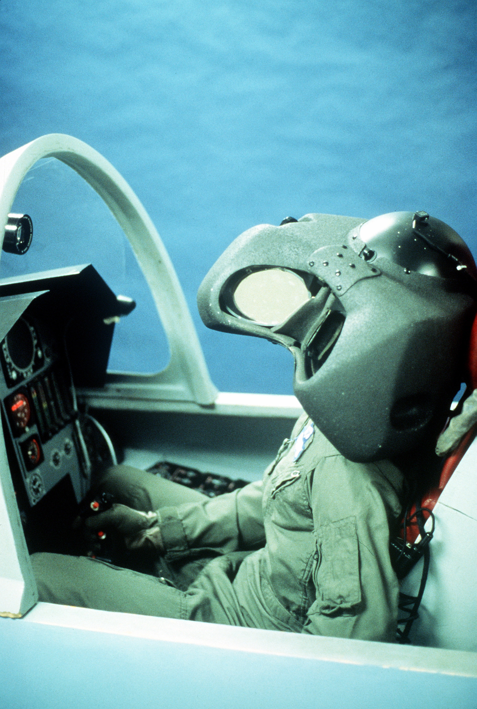
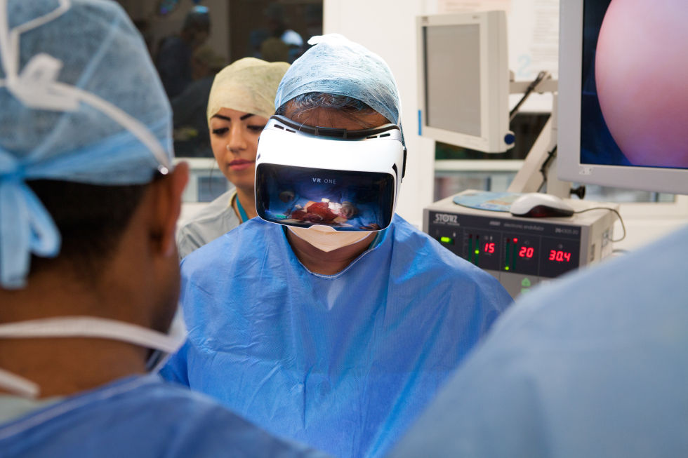

Contents :
Video Games
Social science and psychology
Healthcare
Education and training
Architectural purpose
Video games
1990s
At start of the 1990s, there were some products for virtual reality head-mounted displays.
|
[1] (Nintendo Virtual Boy Repair n.d.) (Nintendo) |
[2] (George 2011) (Virtual I-O) |
|
[3] (Explore Gaming Headset, Virtual Reality, and more! n.d.) (Victormaxx) |
[4] (VFX1 Headgear 2017) (Forte Technologies) |
2000s
In the 2000s there are examples of VR products such as the well known Wii developed by Nintendo. The Wii Remote uses motion sensing for the player to interact with in-game items which is similar to a VR controler.
[5] (NEW WII ACCESSORIES: WII REMOTE PLUS 2010)
2010s
In the 2010s the VR technology is improving rapidly with the release several head-mounted display designed by famous companies, which spead the popularity of VR into the society.
The major headsets includes:
|
[6] (Oculus Rift 2017) (Oculus VR) |
 [7] (Following Oculus Rift Price Reveal, HTC Thinks Vive Customers will be ‘happy with their investment’ 2016) (HTC + Valve) |
 [8] (PlayStation VR 2017) (Sony) |
A famous sandbox game: Minecraft was announced to be compatible with Gear VR by Mojang at 27rd April, 2016
[9] (Pot 2016)
Social science and psychology
In terms of social science and psychology, VR gave a new way for observing various interactions which is useful for social scientist and psychologists.
VR provides a way for human to "become" another person or virtual avatar to experience their sensation.
When human embody someone else using VR, they would react differently comparing to their imagination of :
"If I am that person, I would ...".
This is a video to give you a better understanding on how Virtual Reality would affect our brain !
Healthcare
VR devices made a significant impact in terms of healthcare, below are a few examples:
Pain management
Studies for immersive VR showed that it could distract people's mind and senses and reduce their experience of pain.
For example nowadays for CT scan hospital might ask you to wear a headphone and let you listen to music to distract you, in the future virtual reality headset might be used to upgrade the distraction.
Aiding users of Myoelectric Prostheses
For the people who had lost a part of their body, they can choose to get themselves a prostheses, but the process of learning to use it is extremely difficult.
Different commands involve several unique movement/contraction of a single muscle. After the application of the heavy prostheses the difficulty is even higher.
This results in a lot of people retiring from using prostheses after a few attempts.
But researches had been done that using augmented reality, the users can learn to use different command in a simplier way and the authors reports that all of the volunteers were able to perform basic commands after training for less than 1 hour!
[10] (Naik 2012)
This is a diagram that explain the system of Augmented Reality environment works with the support of electromyography technology for learning how to control prosthesis.
Education and training
Military uses
Both America and United Kingdom started to use virtual reality for their military training in 1980s.
But the first virtual reality military training was created in 1982 in America. It was a virtual flight simulator created by Thomas A. Furness III.

[11] (A pilot's helmet for the visually-coupled airborne systems simulator (VCASS) is worn by an engineer in the VCASS cockpit. A "virtual world" of computer-generated imagery is displayed on the lenses a few inches in front of the pilot's eyes. Flight data is 1995)
Thomas A. Furness III even created another product called the "Super Cockpit". It contain features such as:
Space training
NASA used virtual reality to train their astronauts before they are launched to space. There are various simulation such as :
[12] (How NASA is Using Virtual and Augmented Reality to Train Astronauts 2017)
This is a picture of astronauts training using VR.
Medical training
In terms of Medical training, VR has been used for surgeons to simulate surgeries. Researches proved that surgeons who undergo VR training had better performance than the surgeons who didn't. This is also really useful as absolutely no harm will be caused if accident happens.
Medical students are also able to view the process of surgeries for educational purpose at any time.

[13] (Dormon 2016)
Architectural purpose
VR could be used for architecural purpose too!
Virtual reality in architecture industry was first used by the University of North Carolina to model the building that the computer science department locates: Sitterman Hall.
By now numerous projects of architecture such as transportation planning, urban regeneration uses VR program which could effectively simulate the outcome of construction before even building it.
[14] (Virtual reality 2017)
This is a plan for land development using a VR design system: Prefurbia.
More personally before you construct you new home, you will be able to view it by VR so that you will be able to experience how it feels and will be make more precise improvements to it!